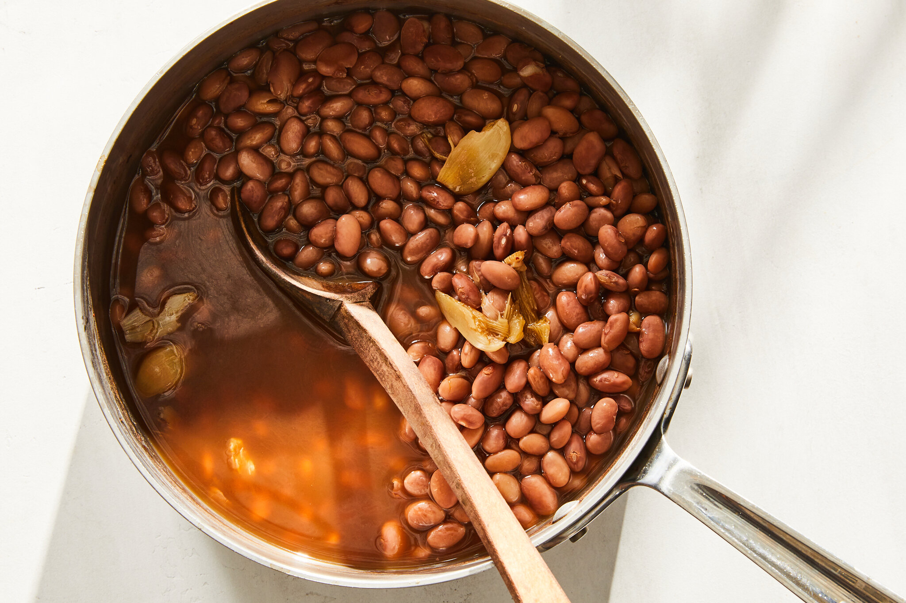

Beans
 $3
Ingredients
- Water
- Salt
- Aromatics: Onions, garlic, and other aromatics.
- Spices: cumin, chili powder, smoked paprika, and bay Leaves.
- Herbs thyme, parsley, cilantro, or bay leaves can add a fresh flavor to your beans.
- Acid: A splash of vinegar or lemon juice can brighten the flavor of your beans.
- Fats: Olive oil, vegetable oil, or other fats can add richness and flavor to your beans.
- Additional ingredients you might include in cooked beans depend on the recipe:
- Broth: Using vegetable or chicken broth instead of water can add more flavor to the beans.
- Tomatoes: Diced tomatoes or tomato paste can add acidity and depth of flavor.
- Sugar: A little bit of sugar can help to balance the flavors of the beans.
- Smoked meats: Bacon, ham hocks, or other smoked meats can add a smoky flavor to your beans.
Cooking methods
- Sort and rinse the beans: Discard any debris or discolored beans. Rinse the beans thoroughly under cold water.
- Soak the beans (optional): Soaking can help reduce cooking time and make the beans easier to digest. There are different soaking methods, so quick research can help you find the best way to soak your particular bean.
- Simmer the beans: Drain the soaked beans (or skip draining if not soaking) and add them to a pot with fresh water. Bring to a boil, then reduce heat and simmer until tender. You can add aromatics like onion, garlic, or herbs for extra flavor.
- Season the beans: Once the beans are tender, you can add salt and other seasonings to taste.
Here are some additional tips:
- You can cook beans on the stovetop, in a slow cooker, or in an instant pot.
- Be sure to check the beans periodically as they simmer and add more water if needed.
- Beans can take anywhere from 30 minutes to a few hours to cook, depending on the variety and soaking method.